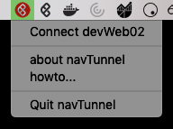

Dette kurset hjelper deg med å komme i gang med å bruke NAIS-plattformen. Du vil lære om de forskjellige featurene NAIS-plattformen tilbyr, hvordan man deployer, og litt hvordan Kubernetes henger sammen.
NAIS er NAV sin applikasjonsplattform, bygd for å gi høyere utviklingsfart ved å tilby utviklere i NAV de beste verktøyene for å utvikle og kjøre sine applikasjoner. Selve NAIS-plattformen er basert på Kubernetes, med en rekke andre rammeverk og verktøy for å støtte under hva våre utviklere trenger.
Følgende må fungere for å kunne gjennomføre denne workshopen.
Gå til myapps.microsoft.com og trykk på appen Github.com.
For å kunne nå NAIS-plattformen så må du ha ScaleFT og NAVTunnel installert.
Mac
På Mac skal begge disse verktøyene var installert automatisk på ny maskin.
Windows
Følg oppskriften i https://github.com/navikt/mob_2.0_navTunnel#for-windows repoet.
Kubeconfig er konfigurasjonen som bestemmer hva du kan nå på NAIS-plattformen, og brukes sammen med kubectl. Hent ned NAV sin konfig fra navikt/kubeconfigs.
Vi anbefaler at du enten legger konfigurasjonen i katalogen $HOME/.kube/ som er standard oppsettet til kubectl. Eller så kan du bestemme selv ved å sette miljøvariabelen KUBECONFIG.
Kubectl er verktøyet vi bruker for å kommunisere med Kubernetes og NAIS-plattformen. Følg oppskriften Install and Set Up kubectl for å sette opp kubectl på din egen maskin.
Du kan verifisere at kubectl er installert på din maskin ved å kjøre kommandoen kubectl version. Da skal responsen være noe lignende som nedenfor. Du vil ikke ha kontakt med NAIS på dette stadiet.
$ kubectl version
Client Version: version.Info{Major:"1", Minor:"14", GitVersion:"v1.14.3", GitCommit:"5e53fd6bc17c0dec8434817e69b04a25d8ae0ff0", GitTreeState:"clean", BuildDate:"2019-06-07T09:55:27Z", GoVersion:"go1.12.5", Compiler:"gc", Platform:"darwin/amd64"}
The connection to the server localhost:8080 was refused - did you specify the right host or port?
Ønsker du å lære mer om kubectl kan du ta en titt på den offisielle dokumentasjonen.
Nå som alle verktøy forhåpentligvis er installert riktig, så må vi koble oss opp til NAIS. Dette gjøres via ScaleFT/NAVTunnel og autentisering mot AD.
Hver gang du skal kommunisere med NAIS må du være logget inn via ScaleFT/NAVTunnel og koblet på devWeb02.
Mac
For å forenkle prossessen anbefaler vi at dere bruker NAVTunnelen til å både innlogging og for å koble seg på. Start ved å trykke på NAVTunnel ikonet i menu bar. Den vil da automatisk åpne opp en nettleser hvor du så kan logge deg inn. Etter dette trykker du på Connect devWeb02 via NAVTunnelen.

Windows
Kjør ssh -fNq devWeb02 for å sette opp tunnellen. Hvis dette feiler, kan det være at ScaleFT-sesjonen er gått ut. Kjør da ƒsft login og prøv på nytt.
Neste steg går ut på å velge context vi ønsker å kommunisere mot, og autentisere oss mot NAIS.
Kjør følgende kommando for å sette context (i denne workshopen bruker vi dev-fss):
For å autentisere oss, må vi begynne å snakke med NAIS, og første gangen vil vi bli bedt om å logge inn med NAV-e-post og passord. Når dette er gjort vil kubectl oppdatere kubeconfig-filen vår med nødvedige tokens for å kommuniserer ned NAIS.
$ kubectl get pods
To sign in, use a web browser to open the page https://microsoft.com/devicelogin and enter the code DWQ7L3D9K to authenticate.
Hvis alt går som det skal, så vil du etter innloggingen får en liste av pods som kjører i dev-fss
Som den gamle applikasjons-plattformen, har ikke NAIS-plattforen bare et miljø. Den store forskjellen er at et miljø på NAIS består av to deler. Først har vi context (også kalt cluster på folkemunn), som er tilpasset sone-modellen i NAV, så har vi namespace, som er en oppdeling av en context, altså et avgrenset område innad i context. Derfor blir context pluss namespace miljøet du er i. For de fleste anbefaler vi å bruke default namespace.
For eksempel vil en applikasjon kjøre i context prod-fss, og namespace default, miljøet til applikasjonen vil da være prod-fss:default.
Da NAIS er en delt plattform, skiller vi mellom rettigheter/tilganger innad på team du hører til. Derfor må alle ressurser som skal opprettes knyttes til et team via noe som heter labels. For å gjøre det enkelt for deg med denne workshopen kan du bruke felles teamet naiscodelabs, som du kan få tilgang til via Add apps på myapps.microsoft.com.
Duration 10:00
TODO: Skulle vi hatt en egen del om Docker?
For å kjøre applikasjoner på NAIS bruker vi Docker. Docker er en containerteknologi hvor vi kan pakke applikasjonen vår og dens avhengigheter inn i et image. Når dette imaget startes, lages det en container hvor applikasjonen kjører etter spesifikasjonene vi har definert da vi lagde imaget.
Mange steder å lagre docker-images
Fortelle mer om hva en NAIS-app er for noe?
Write file: app.yaml with contents:
apiVersion: nais.io/v1alpha1
kind: Application
metadata:
name: <YOUR_APP>
labels:
team: workshop
spec:
image: gcr.io/google-containers/echoserver:1.10
port: 8080
liveness:
path: /
readiness:
path: /
env:
- name: ENV_NAME
value: "value"
ingresses:
- "https://<YOUR_APP>.127.0.0.1.xip.io"
kubectl apply -f app.yaml
Take a look at the resources that gets created:
kubectl get all -l app=YOUR_APP
This command will output all recources that is labeled by app=YOUR_APP. You might need to run this a couple of times to see everthing.
Run a new curl to see that your app is running:
curl http://<YOUR_APP>.127.0.0.1.xip.iox
Check out the file naiserator-max.yaml to see all features and possibilities provided by naiserator.
Duration 1:00
You can delete your app by running:
kubectl delete application YOUR_APP
Check out the NAIS documentation at https://nais.io/doc.